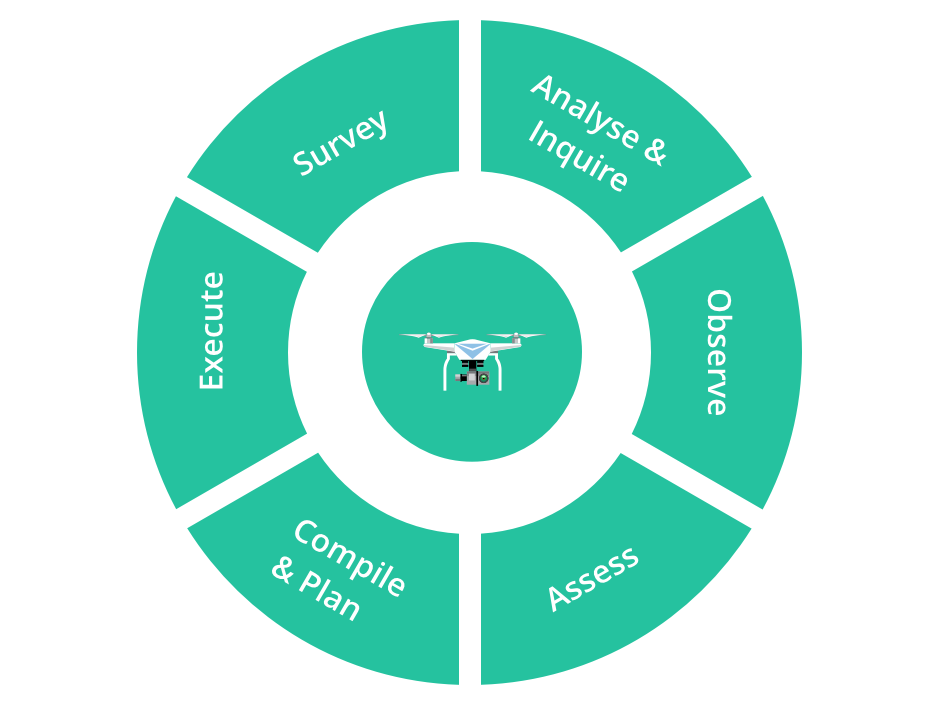
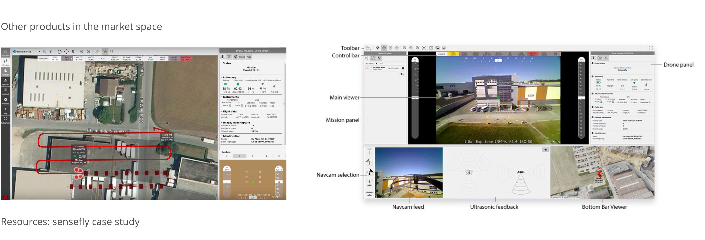
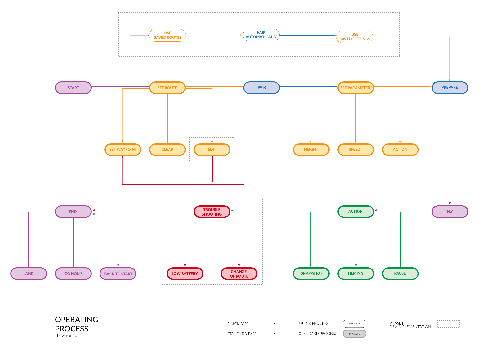

How do we use drones to monitor farming?
As a summer intern at IBM Shanghai, I designed and prototyped the operating tablet application for managing drones on e-farming systems. To maintain confidentiality, I am unable to publish full details of my work but here is an overview of my accomplishments.
Scope
IBM Global Business Solutions
My Role
UI Designer
A drone can capture highly accurate images of farm fields very efficiently, covering up to hundreds of acres in a single flight. By using image processing software, these shots can be transformed into one big orthomosaic image. Applying algorithms to this image reduces the manual labor to manage these crop area.
However, there was not a dedicated software platform designed specifically for farmers and surveyors to seemlessly perform these tasks.

The software should present a minimal number of decision points for the user and should be on a mobile platform.

Competitors in the marketplace provide robust flight planning and control systems that are cumbersome for beginners to operate.
We focused on integrating the core features into a better overall experience. The functions should only be focused on their use cases and the visual should be clear and emphasize the actions.
I designed the operational workflow for the drone, evaluating the nature of the workflow, such as the drone's function after a successful route or the pivotal role of the drone's battery. This question in particular led to the addition of a troubleshooting branch, reducing the risk of a powerless projectile.
